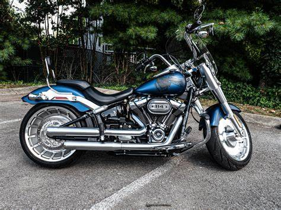

Discover the history, types, and safety measures of motorcycles.
The motorcycle community is more than just a group of riders—it’s a culture built on freedom, adventure, and camaraderie. Whether it's the thrill of the open road, the craftsmanship of the machines, or the sense of belonging to a brotherhood, motorcycles attract people from all walks of life. Riders often seek out the experience for the adrenaline rush, the escape from daily routines, and the friendships that form through shared journeys. From casual weekend riders to dedicated touring enthusiasts, the bond between motorcyclists is one of respect and passion for the ride.